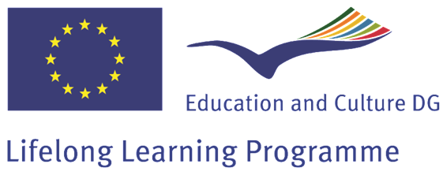

‘TETRIS-- TEaching TRIz at School’ Project has as its primary objective the dissemination  of TRIZ principles, techniques and operating systems in the world of higher education institutions and
of TRIZ principles, techniques and operating systems in the world of higher education institutions and
of specialized training in companies.
TETRIS is a project with the financial support of the Life Long Learning Programme 2007– 013 
“Leonardo da Vinci”and has been developed during years 2008-2009.
OBJECTIVES. Taking as target schools (and teachers) and companies (and workers),
the main objectives of the TETRIS project are:
- Identify the learning needs of education systems and trainers in order to improve the efficiency of the courses aimed at developing individual problem solving skills and at introducing TRIZ at school and into professional organizations.
- Develop a course and training materials to improve individual problem solving capabilities and to speed-up the learning process of TRIZ philosophy and instruments.
Leaflet of the project (in english).
PARTNER. The project has been developed by a group of different international players:
- ACC Austria Gmbh (Austria);
- European Institute for Energy Research - EIfER (Germany)
- Fachhochschule Kärnten (Austria)
- Harry Flosser Studios (Germany)
- Higher Technical College Wolfsberg (Austria)
- Jelgava 1. Gymnasium (Latvia)
- Siemens AG (Germany)
- STENUM Environmental Consultancy and Research Company Ltd (Austria)
- Istituto Tecnico Industriale “Arturo Malignani” (Italy)
- Centro di Educazione per Adulti di Jelgava (Latvia)
- Università di Firenze, Dipartimento di Meccanica e Tecnologie Industriali (Italy)
The projects ended with an ending workshop on 10th November 2009, in Area Science Park Trieste (ITALY).
RESULTS. Among results and outputs of the project, an educational kit comprising:
- A handbook with 5 chapters on TRIZ theory and five examples of inventive problems, with solutions;
- Five animations for attracting to the study of TRIZ and to support the explanation of the main models of TRIZ theory;
- a Guide on introducing TRIZ theory at school based on TETRIS project experience.
The TETRIS project is the first attempt to create a unified multi-language training material to be used by teachers, students, trainers, professionals and interested readers as an alternative to multiple fragmented TRIZ education materials today available.
All these materials can be freely copied and distributed provided the copyright notice remains intact. This also applies to the partial use of the handbook.
Hereafter the handbook (in English):
(Documents in the following are ouputs of the TETRIS project financed with the Life Long Learning Program and copyrights belong to the authors of the documents)
- Cover and Index (link);
- How to use the educational kit TETRIS (link);
- Chapter 1: Introduction and Fundamentals of Classical TRIZ (link);
- Chapter 2: Laws of Engineering Systems Evolution (link);
- Chapter 3: Short Review of Altshuller’s Algorithm of Inventive Problem Solving (ARIZ) Illustrated by the Analysis of a Real Problem (link);
- Chapter 4: Su-Field Analysis and Standard Solutions basic notions and rules (link);
- Chapter 5: Techniques to Resolve Contradictions / Resources / Effects (link);
- Examples of inventive problems: Example 1, Example 2, Example 3, Example 4, Example 5 (link).
Animations are available on YouTube to the following page:
- The History of TRIZ;
- TRIZ Tales, Part I, Nina at School;
- TRIZ Tales, Part II, Nina at University;
- TRIZ Tales, Part III, Nina at Work;
- TRIZ Tales, Part IV, Evolution.